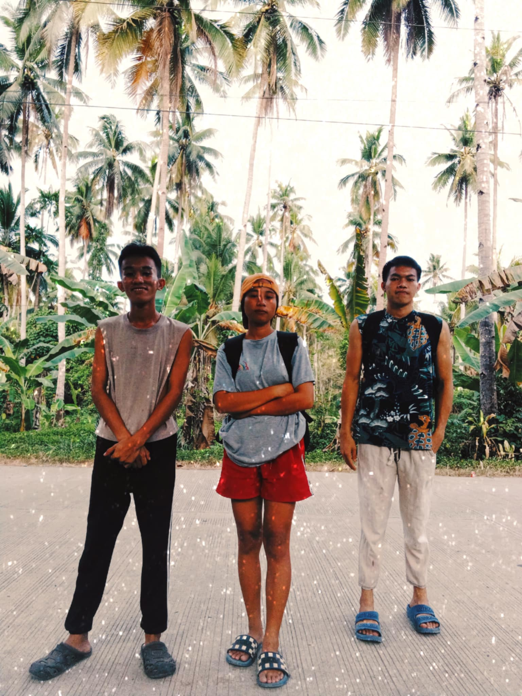
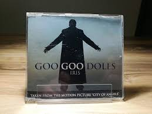
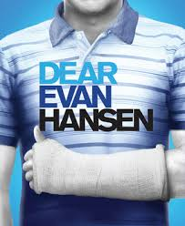
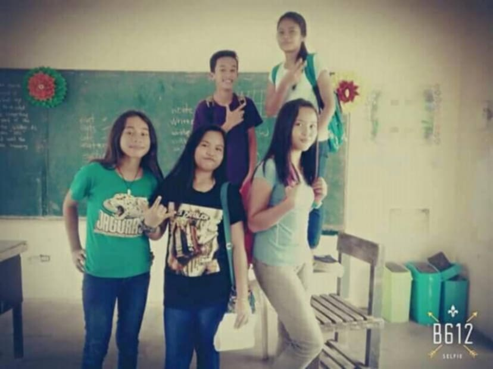
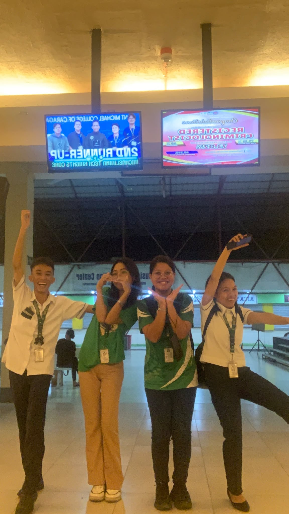
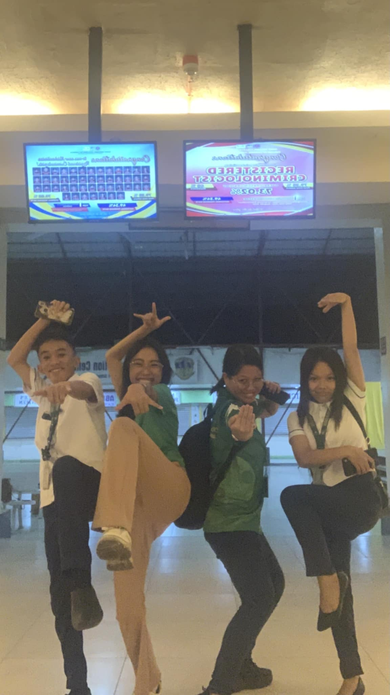
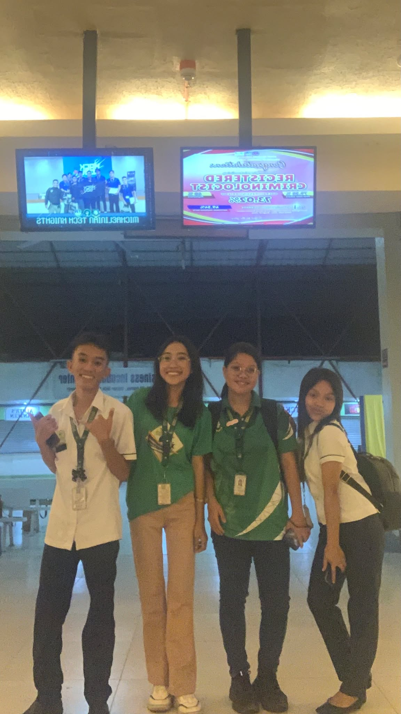
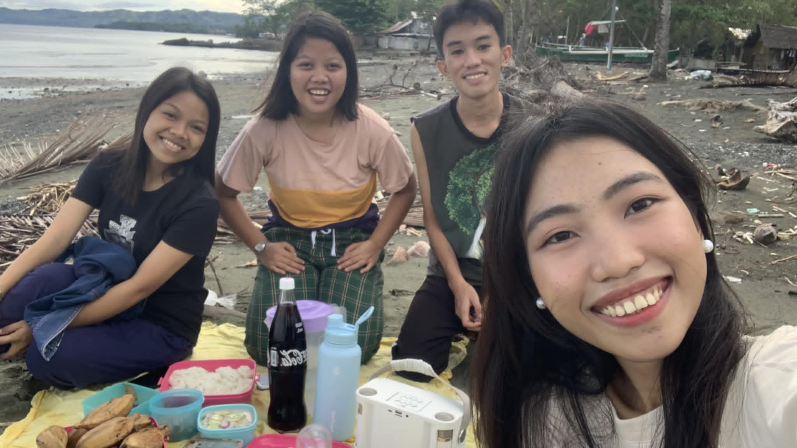

My Life Story
Childhood Experience
When I was a child, some of my happiest moments were spent with my sisters.
I loved spending time with them, whether we were playing games, sharing stories, or simply enjoying each other's company.
Being around them always brought me a sense of joy and comfort. Those playful moments not only strengthened our bond but also filled my childhood with laughter and unforgettable memories.
Looking back, I realize how much those times shaped my appreciation for family and the simple joys of togetherness.
Teenage Experience

During my teenage years, I had the wonderful opportunity to create unforgettable memories through activities like hiking with my friends.
Exploring nature together, climbing trails, and reaching breathtaking viewpoints gave me a sense of adventure and accomplishment.
Beyond hiking, we also enjoyed traveling to different places, discovering new environments, and immersing ourselves in diverse experiences.
Each journey brought excitement, strengthened our bond, and taught us valuable lessons about teamwork and appreciation for the world around us.
Looking back, these adventures were some of the most enriching and enjoyable moments of my youth.
My Hobbies
Indoor Hobbies
In my free time, I enjoy a variety of activities that help me relax and rechargeb inside our home.
Watching movies is one of my favorite pastimes, as it allows me to explore different stories and genres.
I also love playing online games, which not only provide entertainment but also let me connect with friends and other players.
Listening to music is another hobby I deeply enjoy, as it helps me unwind and boosts my mood.
Outdoor Hobbies
Outdoor Hobbies
Occasionally, I like traveling to new places, experiencing different cultures, and creating memorable adventures.
These hobbies bring balance and joy to my daily life.
Music

One of my favorite songs is "Iris" by Goo Goo Dolls.
This timeless classic holds a special place in my heart because of its emotional lyrics and powerful melody.
The song’s message about love, vulnerability, and wanting to be truly seen resonates deeply with me. Every time I listen to it,
the heartfelt vocals and sweeping instrumentals evoke a sense of nostalgia and introspection.
Whether I’m feeling happy or reflective, "Iris" never fails to move me and remind me of the beauty of genuine connection. It’s a song that I can play on repeat and never grow tired of.
Color
My favorite colors are black and white,
two shades that perfectly complement each other and represent a timeless elegance.
I love how black exudes sophistication, mystery, and strength, while white conveys simplicity, purity, and clarity.
Together, they create a balance that feels both modern and classic. Whether it’s in clothing, design, or art,
the combination of black and white always stands out with its clean and striking contrast. These colors reflect my personality,
as I value both depth and simplicity in the things I love.
Movie

My favorite movie is Dear Evan Hansen
because of its heartfelt story and meaningful themes of mental health, self-acceptance, and connection.
The character of Evan and the emotional soundtrack, especially songs like "You Will Be Found," deeply resonate with me.
It’s a movie that inspires kindness and self-reflection.
My Friends
Childhood Friends


I’ve been lucky to have amazing friends throughout my life.
In elementary, they were my first companions in learning and play. In high school,
they supported me through challenges and shared unforgettable moments. Today,
I’m grateful for both old and new friends who continue to inspire and support me.
College Friends




I’ve been lucky to have amazing friends throughout my life.
In elementary, they were my first companions in learning and play. In high school,
they supported me through challenges and shared unforgettable moments. Today,
I’m grateful for both old and new friends who continue to inspire and support me.
Thank you so much for taking the time to read my story.
I hope that through this article, you’ve gained a better understanding of who I am and the journey that has shaped me.
Life is a continuous learning process, and I’m grateful to share this part of my journey with you. I appreciate your support and interest,
and I look forward to connecting with you further in the future.
Stay curious, stay inspired, and never stop exploring who you are.